Welcome to my pride and joy! This is my most ambitious web build to date designed, developed, and coded entirely from scratch. I created it to reflect the full creative and technical range of the studio, from visual identity through to user experience and interactive design.
The site features a variety of advanced technical features coded using custom HTML, CSS, and JavaScript with no pre-built templates. I incorporated features such as parallax scrolling, hover-triggered features, perspective shifts and micro-interactions to keep the experience dynamic and sleek.
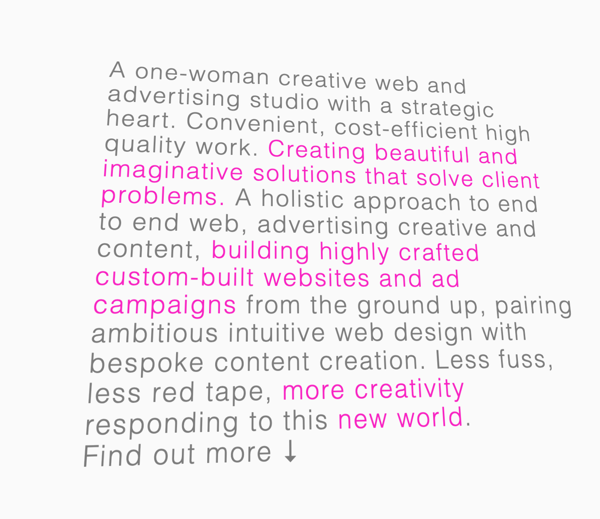
The homepage features interactive text that shifts direction in response to mouse movement, creating a responsive and engaging experience. On mobile, this interaction translates seamlessly into thumb scrolling. The hamburger menu also adapts on toggle switching the font colour to white against a hot pink background for a bold visual impact.
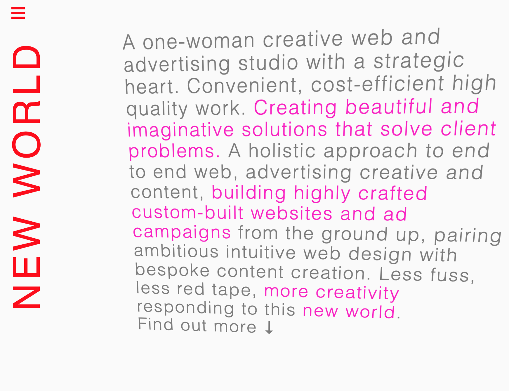
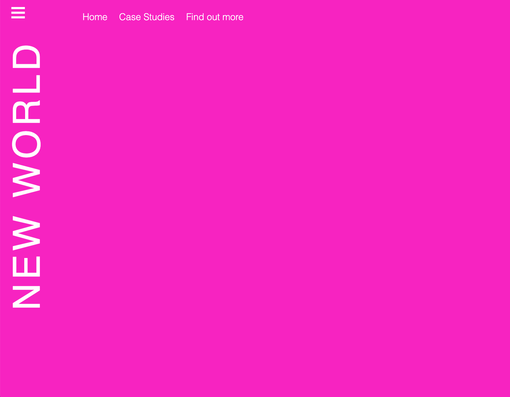
Parallax scrolling is a key feature throughout the site, used to highlight the technical and creative skills I offer. A custom rectangle, matched to poster dimensions, scrolls at a faster speed than the surrounding elements, while layered images move at different rates to create a subtle three-dimensional effect and a sense of depth.
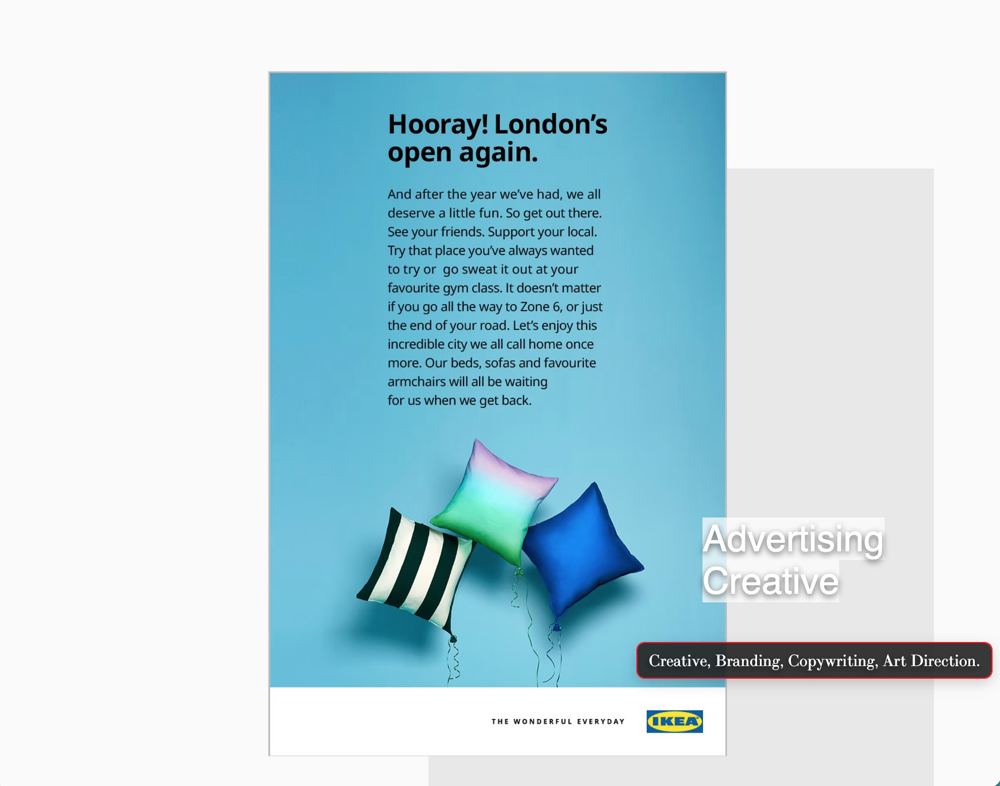
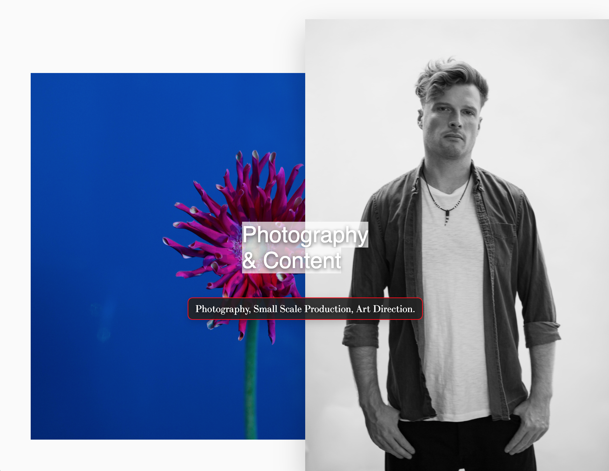
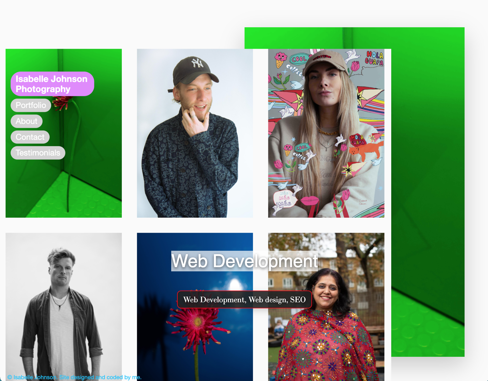
I have created a perspective shift effect on the case studies page to images and text. The mouse also converts into a button that can be scrolled over the relevant images. On mobile, the perspective shift of the images occurrs on scroll.
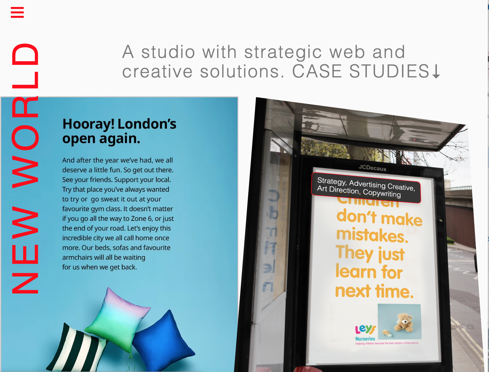
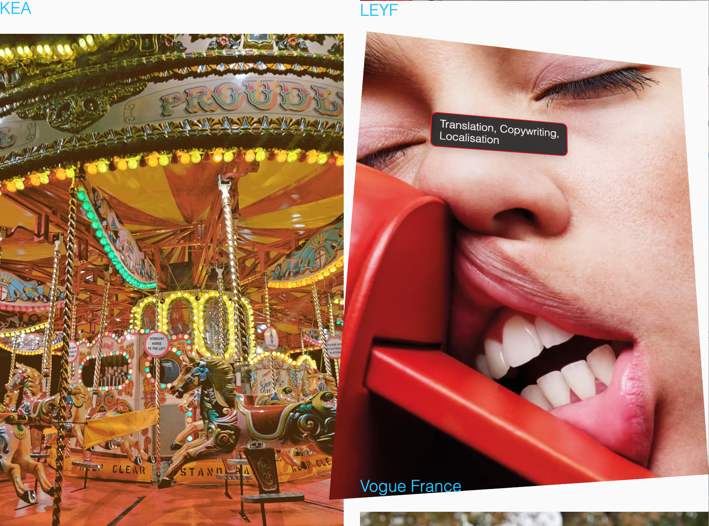
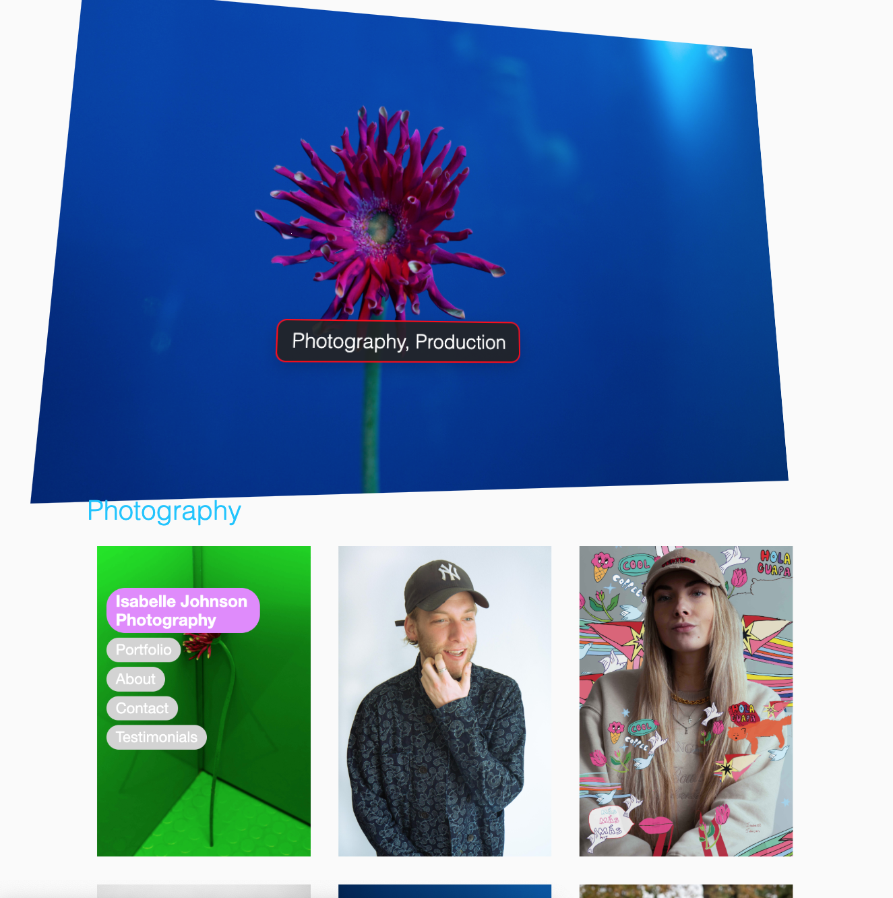
Throughout the site, I’ve used a hover effect where elements shift colour and a north-east pointing arrow appears - a subtle nod to the idea of a ‘new world’, echoed in the site’s navigation.
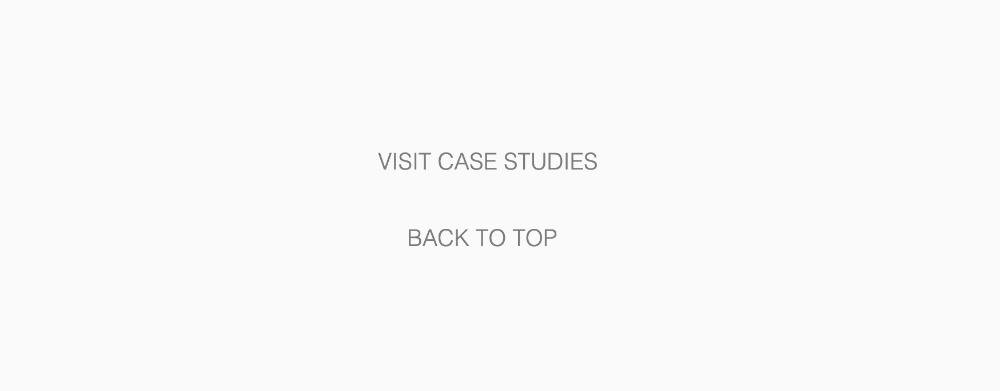
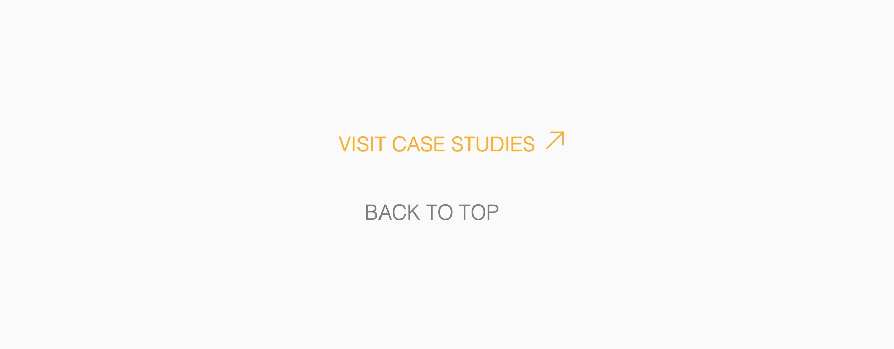